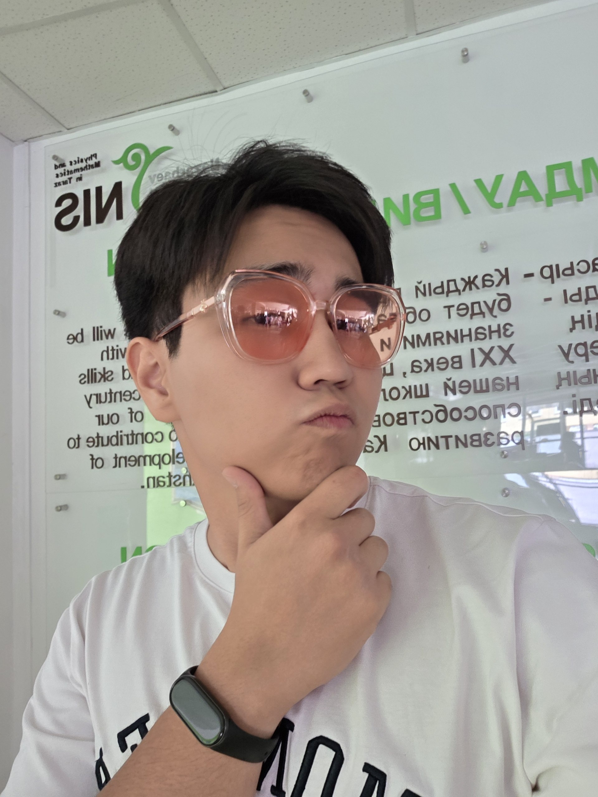
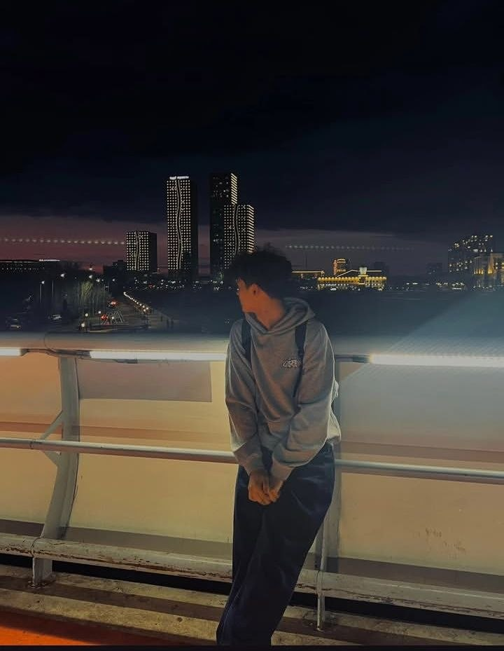

About the Team
We are two software engineering students from Almaty combining our web development skills to build a clean and functional coffee shop web application.

Nurali Kalmakhanbet
Nurali was born in 2007 and comes from Almaty. He is deeply interested in coding and web technologies. He structured the core project boilerplate, Home page, and About Us section. Outside of programming, he enjoys spending time at the gym and doing strength training.

Zhumak Zhalgas
Zhalgas was born in 2008 and is also from Almaty. He shares a strong passion for coding and building user interfaces. He developed the Menu and Contact pages, including the price table and interactive contact form. In his spare time, he loves playing basketball.
Our Development Workflow
- Formulated the website concept and page architecture
- Designed color scheme and typographic guidelines
- Constructed clean semantic HTML5 markup for all pages
- Applied unified styling using external CSS
- Published the finalized site using online deployment tools